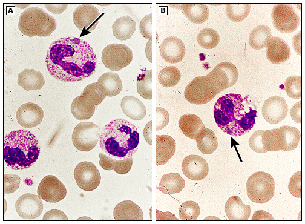

Toxic granulations and Döhle bodies in infection/inflammation

(A) Peripheral blood smear shows neutrophils with toxic granulations, which are dark coarse granules. A Döhle body is also seen (arrow). (B) A neutrophil with toxic granulations, vacuoles (another toxic change), and a Döhle body (arrow). These abnormalities are characteristic of toxic systemic illnesses.